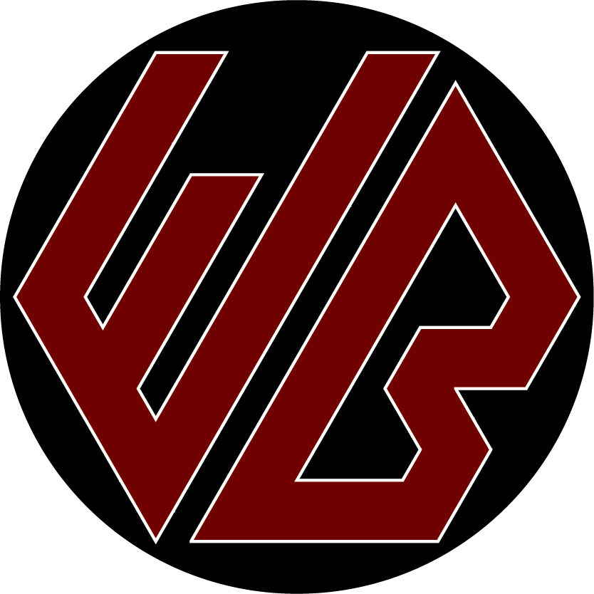

Warwick Barker
Project Selection
I start projects for three main reasons: being tasked by someone, looking to stay busy, or trying to solve a problem. Most of my projects are small tasks that my family gives me, particularly related to our pets. These projects are decent excercises, but usually don't challenge me to learn more. Projects to keep me busy or solving a problem tend to coincide. I don't like spending too much time on video games or YouTube, so I'm always trying to come up with projects to keep me busy. My CNC project came about because I wanted a design challenge over the summer and I was fed up with slow turnarounds from my robotics team's CNC mill (this was before I knew how to use it). It kept me busy for most of the summer and turned into a fabrication project later on. In all, my biggest, and most enjoyable, projects challenge me to learn a little bit of something new while getting valuable experience with things I've already used.
Project Highlights
(Find all projects in the navbar at the top of each page)